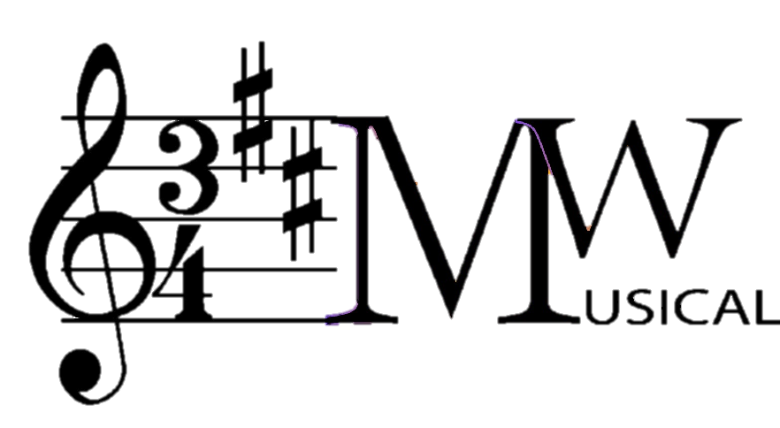

<mat-toolbar class=" const-height application-main-color-shadow ">
  <button mat-icon-button (click)="navService.openNav()">
    <mat-icon>menu</mat-icon>
  </button>
  
  <span class="example-spacer"></span>
  <button mat-icon-button (click)="changeLang('de')">
    <mat-icon svgIcon="pl"></mat-icon>
  </button>
  <button class="icon-margin" mat-icon-button (click)="changeLang('en')">
    <mat-icon svgIcon="uk"></mat-icon>
  </button>
  <!--<button class="icon-margin" mat-icon-button matTooltip="{{'Header.language' | translate}}" (click)=langselect.open()>-->
  <!--<mat-icon>language</mat-icon>-->
  <!--<mat-select class="langSelect" #langselect [(ngModel)]="setLang">-->
  <!--&lt;!&ndash;<mat-option (click)="changeLang()" value="en">{{'Header.english-language' | translate}}</mat-option>&ndash;&gt;-->
  <!--&lt;!&ndash;<mat-option (click)="changeLang()" value="de">{{'Header.german-language' | translate}}</mat-option>&ndash;&gt;-->
  <!--<mat-option (click)="changeLang()" value="en">english</mat-option>-->
  <!--<mat-option (click)="changeLang()" value="de">german</mat-option>-->
  <!--</mat-select>-->
  <!--</button>-->
  <button mat-icon-button matTooltip="{{'Header.profile' | translate}}" (click)="profileselect.open()">
    <div *ngIf="hasProfilePic();else other_content">
      
    </div>
    <ng-template #other_content>
      <mat-icon class="profile-icon" svgIcon="profile_pic"></mat-icon>
    </ng-template>

    <mat-select class="langSelect" #profileselect>
      <mat-option (click)="logOut()" value="en">log out</mat-option>
      <mat-option (click)="showProfile()" value="de">my profile</mat-option>
    </mat-select>
  </button>
  <h1 class="app-name">{{username}}</h1>
</mat-toolbar>
